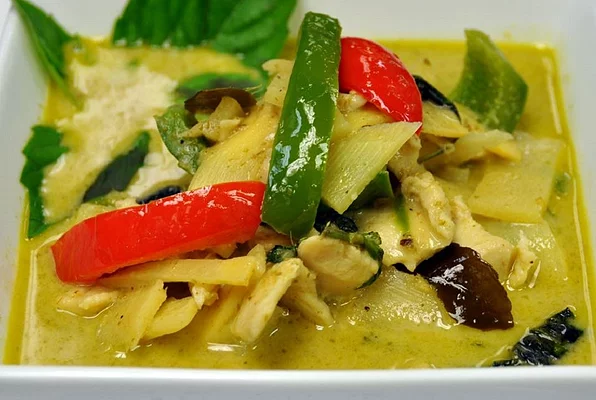

Thai Curry

Delicious Bowl of Thai Green Curry
Thai Green Curry is a delicious soup that is both sweet and
salty while packing a spicy punch. It can be made whichever
meat and vegetable you like, but here we will be using chicken
along with bamboo shoots, green and red bell pepper, basil,
and baby corn. The base is made from rich and
creamy coconut milk and makes this dish sure to please all.
Ingredients
- 1 can Green Curry Paste
- 1 can Coconut Milk
- 1 lb Chicken
- 1 Green Bell Pepper
- 1 Red Bell Pepper
- 1 small can Bamboo Shoots
- Rice
Steps
- Brown the chicken in a pan with a small amount of oil
- Just before Chicken is fully cooked fry the curry paste for 30 seconds
- Add in the cocnut milk to the curry paste and incorporate
- Let the mixture cook for 5 minutes at medium heat
- Add in the chopped vegetables and bamboo shoots, reduce to low heat and cover
- Serve with steamed rice and enjoy!